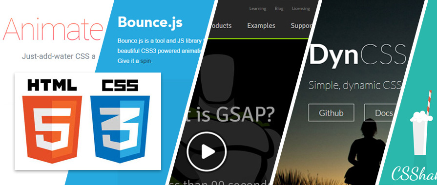

10 Librerías CSS Imprescindibles para Optimizar tu Diseño

Las librerías y frameworks CSS son herramientas poderosas que pueden acelerar significativamente tu flujo de trabajo de desarrollo web. Proporcionan estilos predefinidos, componentes y utilidades que te ayudan a crear diseños atractivos y responsivos sin escribir todo el CSS desde cero.
Nuestra Selección de Librerías CSS Favoritas:
- 1. Bootstrap: El framework CSS más popular. Ofrece una amplia gama de componentes pre-estilizados y un sistema de cuadrícula robusto para desarrollo responsivo y mobile-first. (Visitar sitio)
- 2. Tailwind CSS: Un framework utility-first que te permite construir diseños complejos directamente en tu HTML con clases de utilidad de bajo nivel. (Visitar sitio)
- 3. Bulma: Un framework CSS moderno basado en Flexbox. Es modular, fácil de aprender y no tiene dependencias de JavaScript. (Visitar sitio)
- 4. Materialize CSS: Basado en Google's Material Design, ofrece componentes con un estilo moderno y animaciones sutiles. (Visitar sitio)
- 5. Pure.css: Un conjunto de módulos CSS responsivos y minimalistas, ideales para sitios pequeños o cuando solo necesitas un punto de partida ligero. (Visitar sitio)
- 6. Semantic UI: Un framework que te permite escribir HTML semántico y conciso, utilizando lenguaje natural para sus clases. (Visitar sitio)
- 7. Milligram: Un framework CSS minimalista que proporciona lo esencial para un diseño web moderno con solo 2kb comprimido con gzip. (Visitar sitio)
- 8. Animate.css: Una librería de animaciones CSS "ready-to-use" que puedes aplicar fácilmente a tus elementos HTML. (Visitar sitio)
- 9. normalize.css: No es un framework, sino una hoja de estilo que "normaliza" las diferencias de estilos por defecto entre navegadores, muy útil al inicio de un proyecto. (Visitar sitio)
- 10. Font Awesome (iconos): Aunque ya lo estamos usando, es esencial para añadir iconos escalables y vectoriales a tu diseño sin necesidad de imágenes. (Visitar sitio)
Explora estas opciones y encuentra la que mejor se adapte a las necesidades de tus proyectos. Utilizar una librería CSS puede ahorrarte mucho tiempo y esfuerzo, permitiéndote enfocarte en la lógica y la interactividad de tu aplicación.